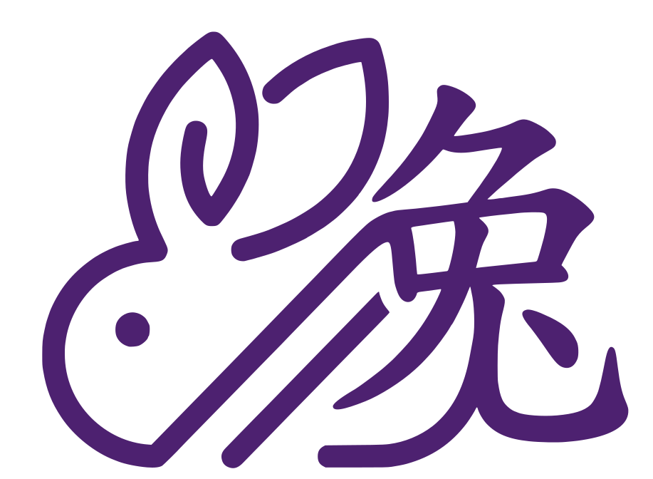

BunnyLing.
Ningún archivo abierto
Elige o importa material en Biblioteca
Abre Biblioteca para importar tus videos, audios, libros EPUB/PDF/TXT o subtítulos SRT/VTT.
Biblioteca
Diccionario
Sesiones
0
Sesiones históricas
0
Sesiones hoy
Sesión actual
Sin sesión activa
Historial reciente
Ajustes
Servicios de IA
Las claves se guardan solo en este dispositivo. Los modelos de Gemini y Deepgram y las voces de Deepgram se piden directamente a sus servidores (la app no trae listas escritas); si algo falla, el estado de abajo dice exactamente qué. La clave Deepgram también se usa para transcribir y generar audio.
Almacenamiento interno IndexedDB
Al narrar, el audio y sus subtítulos (.mp3 + .srt) se guardan en esta carpeta. Cada parte nueva se añade sin borrar las anteriores.